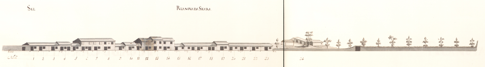
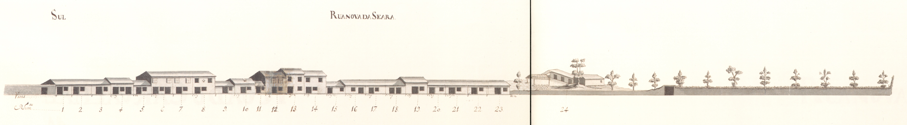

Campo de Nossa Senhora a Branca. Rua da Régua. Rua Nova da Seara
Imagens antigas:
 

Imagens atuais:


Descrição:
Devido ao desnível do terreno onde se implantava, estava dividido em duas ruas, separadas por um murete no centro.
Aberta talvez sobre o traçado da via romana que levava a Chaves, esta rua, na Idade Média, fazia a ligação entre a cidade e a igreja de S. Victor.Chamava-se então rua da Corredoura. Chaves, esta rua, na Idade Média, fazia a ligação entre a cidade e a igreja de S. Victor.Chamava-se então rua da Corredoura.
D.Luís de Sousa (1677-1690) reedificador da igreja de S.Victor que fica na extremidade Este desta artéria, mandou alargá-la, criando então 2 artérias paralelas e desniveladas: a da Régua no lado Norte e a rua Nova da Seara, no Sul. D.Luís de Sousa (1677-1690) reedificador da igreja de S.Victor que fica na extremidade Este desta artéria, mandou alargá-la, criando então 2 artérias paralelas e desniveladas: a da Régua no lado Norte e a rua Nova da Seara, no Sul.
Em 1750 tinha um carácter ainda de via de penetração; por ela entrava na cidade todo o tráfego oriundo da zona do Barroso e do Bom Jesus. 1750 tinha um carácter ainda de via de penetração; por ela entrava na cidade todo o tráfego oriundo da zona do Barroso e do Bom Jesus.
Os seus edifícios eram quase todos do tipo com a porta de entrada ladeada de uma janela, com dois pisos e janelas bracarenses no primeiro andar.
Os alçados que aqui se apresentam têm três tipos diferentes: os da parte do campo de Nossa Senhora a Branca são casas simples, de dois pisos, do tipo de porta ladeada por janela no rés-do-chão e janelas bracarenses no andar nobre, e três vãos. Os da rua da Régua, são do mesmo tipo mas têm apenas 2 vãos o que imediatamente lhe dá outro carácter. Os da rua Nova da Seara são muito mais pobres, predominando os de um só piso (75%), muitos deles também do tipo de porta ladeada por janela (79%), e com as aberturas vazadas, que seriam tapadas por portas de madeira; a metade Oeste estava totalmente ocupada por campos. campo de Nossa Senhora a Branca são casas simples, de dois pisos, do tipo de porta ladeada por janela no rés-do-chão e janelas bracarenses no andar nobre, e três vãos. Os da rua da Régua, são do mesmo tipo mas têm apenas 2 vãos o que imediatamente lhe dá outro carácter. Os da rua Nova da Seara são muito mais pobres, predominando os de um só piso (75%), muitos deles também do tipo de porta ladeada por janela (79%), e com as aberturas vazadas, que seriam tapadas por portas de madeira; a metade Oeste estava totalmente ocupada por campos.
Esta artéria mantém algumas das raras casas deste tipo que ainda hoje se conservam em Braga. Braga.
Das 56 casas do lado Norte (correspondendo ao Campo de Nossa Senhora a Branca e rua da Régua) e 24 do Sul (rua Nova da Seara) eram prazos do Cabido 22 e 24, respectivamente. Campo de Nossa Senhora a Branca e rua da Régua) e 24 do Sul (rua Nova da Seara) eram prazos do Cabido 22 e 24, respectivamente.
As ruas da Régua e Nova da Seara formam actualmente a rua de S. Victor. Esta designação remonta já a 1865. ruas da Régua e Nova da Seara formam actualmente a rua de S. Victor. Esta designação remonta já a 1865.
Lista das casas
-
Número 1 Enfiteuta Sebastião Luís de Faria, enfiteuta principal do prazo dos campos detrás de Nossa Senhora a Branca e das Ranhas, sito na freguesia de S.Vitor Foro ??? Descrição Os herdeiros de Cosme Francisco, besteiro, casado com Isabel Pereira, pagam 540 reis e 1 galinha ao enfiteuta do prazo dos campos detrás de N. Sra. a Branca e das Ranhas, situado na freguesia de S. Vitor. Confronta, do poente, com casa foreira ao Hospital de S.Marcos. Cosme Francisco, besteiro, casado com Isabel Pereira, pagam 540 reis e 1 galinha ao enfiteuta do prazo dos campos detrás de N. Sra. a Branca e das Ranhas, situado na freguesia de S. Vitor. Confronta, do poente, com casa foreira ao Hospital de S.Marcos.
-
Número 2 e 3 Enfiteuta Sebastião Luís de Faria, enfiteuta principal do prazo dos campos detrás de Nossa Senhora a Branca e das Ranhas, sito na freguesia de S.Vitor Foro ??? Descrição Os herdeiros de Francisco Gomes, alfaiate, casado com Margarida Francisca, pagam 660 reis e 1 galinha ao enfiteuta do prazo dos campos detrás de N. Sra. a Branca e das Ranhas. Francisco Gomes, alfaiate, casado com Margarida Francisca, pagam 660 reis e 1 galinha ao enfiteuta do prazo dos campos detrás de N. Sra. a Branca e das Ranhas.
-
Número 4 Enfiteuta Sebastião Luís de Faria, enfiteuta principal do prazo dos campos detrás de Nossa Senhora a Branca e das Ranhas, sito na freguesia de S.Vitor Foro ??? Descrição Os herdeiros de Maria de Oliveira, viúva, pagam 710 reis e 1 galinha ao enfiteuta do prazo dos campos detrás de N. Sra. a Branca e das Ranhas. Maria de Oliveira, viúva, pagam 710 reis e 1 galinha ao enfiteuta do prazo dos campos detrás de N. Sra. a Branca e das Ranhas.
-
Número 5 e 6 Enfiteuta Sebastião Luís de Faria, enfiteuta principal do prazo dos campos detrás de Nossa Senhora a Branca e das Ranhas, sito na freguesia de S.Vitor Foro ??? Descrição Os herdeiros de Tomé de Araújo, carpinteiro, casado com Maria Antónia, pagam 1050 reis e 1 galinha ao enfiteuta do prazo dos campos detrás de N. Sra. a Branca e das Ranhas. Tomé de Araújo, carpinteiro, casado com Maria Antónia, pagam 1050 reis e 1 galinha ao enfiteuta do prazo dos campos detrás de N. Sra. a Branca e das Ranhas.
-
Número 7, 8 e 9 Enfiteuta Sebastião Luís de Faria, enfiteuta principal do prazo dos campos detrás de Nossa Senhora a Branca e das Ranhas, sito na freguesia de S.Vitor Foro ??? Descrição Os herdeiros de Domingos Fernandes, tanoeiro, casado com Isabel Gonçalves, pagam 1400 reis e 2 galinhas ao enfiteuta do prazo dos campos detrás de N. Sra. a Branca e das Ranhas. Domingos Fernandes, tanoeiro, casado com Isabel Gonçalves, pagam 1400 reis e 2 galinhas ao enfiteuta do prazo dos campos detrás de N. Sra. a Branca e das Ranhas.
-
Número 11 Enfiteuta Sebastião Luís de Faria, enfiteuta principal do prazo dos campos detrás de Nossa Senhora a Branca e das Ranhas, sito na freguesia de S.Vitor Foro ??? Descrição Os herdeiros de Maria de Sousa, casada com Tomé da Silva, da freguesia de Barroso, pagam 750 reis e 1 galinha ao enfiteuta do prazo dos campos detrás de N. Sra. a Branca e das Ranhas. Maria de Sousa, casada com Tomé da Silva, da freguesia de Barroso, pagam 750 reis e 1 galinha ao enfiteuta do prazo dos campos detrás de N. Sra. a Branca e das Ranhas.
Esteve unida ao n.º10 entre os anos de 1612 a 1671. 1612 a 1671.
-
Número 12 Enfiteuta Sebastião Luís de Faria, enfiteuta principal do prazo dos campos detrás de Nossa Senhora a Branca e das Ranhas, sito na freguesia de S.Vitor Foro ??? Descrição Os herdeiros de Inácia do Vale, filha natural de Isabel Dias, pagam 720 reis e 1 galinha ao enfiteuta do prazo dos campos detrás de N. Sra. a Branca e das Ranhas. Esteve unida ao n.º10 entre os anos de 1612 a 1679. Inácia do Vale, filha natural de Isabel Dias, pagam 720 reis e 1 galinha ao enfiteuta do prazo dos campos detrás de N. Sra. a Branca e das Ranhas. Esteve unida ao n.º10 entre os anos de 1612 a 1679.
-
Número 13 Enfiteuta Sebastião Luís de Faria, enfiteuta principal do prazo dos campos detrás de Nossa Senhora a Branca e das Ranhas, sito na freguesia de S.Vitor Foro ??? Descrição Os herdeiros de Domingos Fernandes, ferreiro, casado com Isabel Antónia, pagam foro ao enfiteuta do prazo dos campos detrás de N. Sra. a Branca e das Ranhas. Domingos Fernandes, ferreiro, casado com Isabel Antónia, pagam foro ao enfiteuta do prazo dos campos detrás de N. Sra. a Branca e das Ranhas.
-
Número 14 Enfiteuta Sebastião Luís de Faria, enfiteuta principal do prazo dos campos detrás de Nossa Senhora a Branca e das Ranhas, sito na freguesia de S.Vitor Foro ??? Descrição Os herdeiros de António Carvalho, sombreiro, casado com Maria Martins, pagam 700 reis e 1 galinha ao enfiteuta do prazo dos campos detrás de N. Sra. a Branca e das Ranhas. António Carvalho, sombreiro, casado com Maria Martins, pagam 700 reis e 1 galinha ao enfiteuta do prazo dos campos detrás de N. Sra. a Branca e das Ranhas.
-
Número 15 Enfiteuta Sebastião Luís de Faria, enfiteuta principal do prazo dos campos detrás de Nossa Senhora a Branca e das Ranhas, sito na freguesia de S.Vitor Foro ??? Descrição Os herdeiros de Francisco Martins, sombreiro, casado com Gregória Ferreira, pagam 770 reis ao enfiteuta do prazo dos campos detrás de N. Sra. a Branca e das Ranhas. Francisco Martins, sombreiro, casado com Gregória Ferreira, pagam 770 reis ao enfiteuta do prazo dos campos detrás de N. Sra. a Branca e das Ranhas.
-
Número 16 Enfiteuta Sebastião Luís de Faria, enfiteuta principal do prazo dos campos detrás de Nossa Senhora a Branca e das Ranhas, sito na freguesia de S.Vitor Foro ??? Descrição Os herdeiros do Padre António de Oliveira, pagam 755 reis ao enfiteuta do prazo dos campos detrás de N. Sra. a Branca e das Ranhas. Padre António de Oliveira, pagam 755 reis ao enfiteuta do prazo dos campos detrás de N. Sra. a Branca e das Ranhas.
-
Número 17 Enfiteuta Sebastião Luís de Faria, enfiteuta principal do prazo dos campos detrás de Nossa Senhora a Branca e das Ranhas, sito na freguesia de S.Vitor Foro ??? Descrição Os herdeiros de Maria Gonçalves, viúva de Francisco Gonçalves, pagam 700 reis e 1 galinha ao enfiteuta do prazo dos campos detrás de N. Sra. a Branca e das Ranhas. Maria Gonçalves, viúva de Francisco Gonçalves, pagam 700 reis e 1 galinha ao enfiteuta do prazo dos campos detrás de N. Sra. a Branca e das Ranhas.
Foi subenfiteut, juntamente com os n.º18, 19, 20, 21 e 22, no ano de 1612. 1612.
-
Número 18 a 22 Enfiteuta Sebastião Luís de Faria, enfiteuta principal do prazo dos campos detrás de Nossa Senhora a Branca e das Ranhas, sito na freguesia de S.Vitor Foro ??? Descrição Os subenfiteutas pagam ao enfiteuta do prazo dos campos detrás de N. Sra. a Branca e das Ranhas, pelo n.º18, 100 reis; pelo n.º19, 600 reis e 1 galinha; pelos n.º20 e 21 (unidos), 700 reis e 1 galinha; e pelo n.º22, 700 reis e 1 galinha. N. Sra. a Branca e das Ranhas, pelo n.º18, 100 reis; pelo n.º19, 600 reis e 1 galinha; pelos n.º20 e 21 (unidos), 700 reis e 1 galinha; e pelo n.º22, 700 reis e 1 galinha.
A casa n.º22 confronta, do nascente, com casa foeira à Mitra.